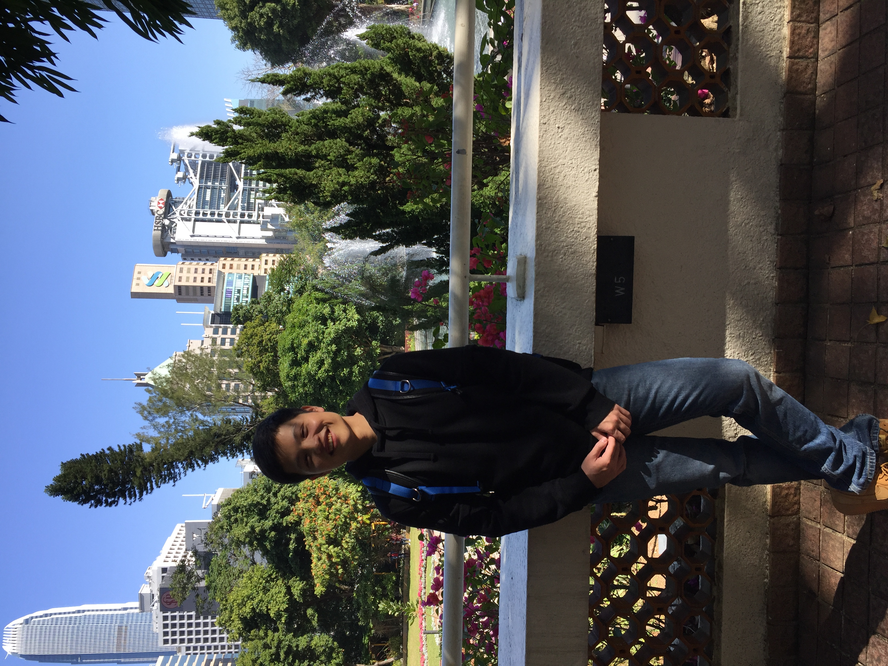

|  |
Email: a@b, a=whucs2013wzy b=gmail.com] |
Hi! I am a NLP researcher at Shanghai AI Laboratory. I got my PhD degree from the University of Hong Kong at the end of 2021, affiliated with the HKU database group and NLP group. I am advised by Prof. Ben Kao. I am also working closely with Dr. Lingpeng Kong. Before that, I received my B.E. degree from the Dept. of Computer Science at Wuhan University in 2017. Throughout my graduate studies, I had great internships in Tencent AI Lab and Huawei Noah's Ark Lab.
I am boardly interested in different topics in NLP. But at the moment, my research focus on exploring interesting (sometimes surprising) utality of large language models:
To synthesis data without human annotation (ZeroGen, ProGen, SunGen)
To explain model decision using natural language (Neon)
To learn a task by conditioning on in-context examples
If you are also interested in these topics and have a plan to do an internship, feel free to hit me up via email.
(*: equal contribution)
Preprints
DiffuSeq: Sequence to Sequence Text Generation with Diffusion Models
Shansan Gong, Mukai Li, Jiangtao Feng, Zhiyong Wu, Lingpeng Kong.
[pdf]. [code]
ZeroGen+: Self-Guided High-Quality Data Generation in Efficient Zero-Shot Learning
Jiahui Gao, Renjie Pi, Yong Lin, Hang Xu, Jiacheng Ye, Zhiyong Wu, Xiaodan Liang, Zhenguo Li, Lingpeng Kong.
2023
Unsupervised Explanation Generation via Correct Instantiations
Sijie Chen, Zhiyong Wu, Jiangjie Chen, Zhixing Li, Yang Liu, and Lingpeng Kong
[pdf]. [code]
AAAI 2023, Washington
2022
ProGen: Progressive Zero-shot Dataset Generation via In-context Feedback
Jiacheng Ye, Jiahui Gao, Zhiyong Wu, Jiangtao Feng, Tao Yu, and Lingpeng Kong.
EMNLP-Findings 2022, long paper.[pdf].
ZeroGen: Efficient Zero-shot Learning via Dataset Generation
Jiacheng Ye*, Jiahui Gao*, Qintong Li, Hang Xu, Jiangtao Feng, Zhiyong Wu, Tao Yu and Lingpeng Kong.
EMNLP 2022, long paper. [pdf]. [code]
Lexical Knowledge Internalization for Neural Conversational Models
Zhiyong Wu, Wei Bi, Xiang Li, Lingpeng Kong, Ben Kao.
ACL 2022, long paper. [pdf]. [code]
COLO: A Contrastive Learning based Re-ranking Framework for One-Stage Summarization
Chenxin An, Ming Zhong, Zhiyong Wu, Qin Zhu, Xuanjing Huang, Xipeng Qiu.
COLING 2022, long paper. [pdf]. [code]
2021
Good for Misconceived Reasons: An Empirical Revisiting on the Need for Visual Context in Multimodal Machine Translation
Zhiyong Wu, Lingpeng Kong, Wei Bi, Xiang Li, Ben Kao.
ACL 2021, long paper. [pdf] [code]
Cascaded Head-colliding Attention
Lin Zheng, Zhiyong Wu, Lingpeng Kong.
ACL 2021, long paper. [pdf] [code]
2020 and before
Perturbed Masking: Parameter-free Probing for Analyzing and Interpreting BERT
Zhiyong Wu, Yun Chen, Ben Kao, Qun Liu.
ACL 2020. [pdf] [code]
PERQ: Predicting, Explaining, and Rectifying Failed Questions in KB-QA Systems
Zhiyong Wu, Ben Kao, Tien-Hsuan Wu, Pengcheng Yin, Qun Liu.
WSDM 2020, long paper. [pdf]
Towards Practical Open Knowledge Base Canonicalization
TTien-Hsuan Wu, Zhiyong Wu, Ben Kao, Pengcheng Yin.
CIKM 2018. [pdf]
Yaoxiang Wang
Zhenyu Wu